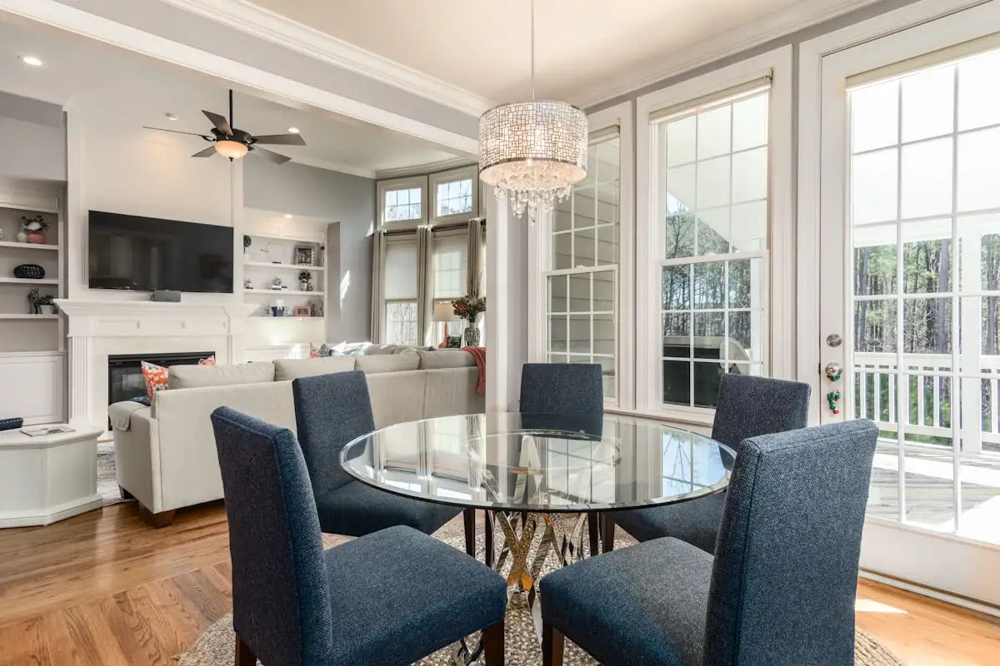

Property Tax Payment & Assessment
Settle your annual municipal property council tax through our secure gateway. Enjoy an instant 5% digital payment rebate before 31 December 2026.
- Accepts Visa, MasterCard, Direct Debit, and BACS transfer
- Download official sealed tax clearance certificate instantly
- Interest waiver scheme on clearing pre-2024 arrears
Live Tax Calculator

Water & Sewerage Connections
Supplying 240 million liters of potable tap water daily to over 48 wards with strict WHO and drinking water quality compliance.
New Water Meter Connection
Apply online with proof of property ownership. Field pipeline connection in 7 working days.
Apply for Meter →Report Pipeline Leakage
Geotag water bursts or low pressure. Rapid mobile repair team dispatches within 2 hours.
Emergency Report →Birth, Death & Marriage Registration
Official certified extracts issued with digital signatures and QR verification code accepted by all national and state authorities.
Birth Certificate Extract
Register births occurring in metropolitan hospitals or homes. Search historical records from 1950 onwards.
- First copy completely free
- Secure digital download
Death Certificate & Burial Pass
Fast-track issuance of death certificates and cemetery allocation permits for bereaved families.
- 24/7 Registrar on-call
- Direct mortuary dispatch
Correction & Name Inclusion
Submit legal affidavit and supporting identity proofs to correct clerical spelling in existing certificates.
- Gazette verification
- Online scrutiny portal
Trade License & Commercial Clearances
Operating a retail establishment, hospitality venue, food manufacturing unit, or commercial facility in the metropolitan region requires a valid municipal trade license.
New Shop & Establishment
Issued within 5 working days upon submitting lease agreement and business plan.
Health & Food Hygiene NOC
Mandatory inspection certificate for restaurants, cafes, and food processing plants.
Automated Building Plan Approval (Auto-DCR)
Submit CAD architectural drawings for instant automated regulation scrutiny against municipal building bylaws.
CAD Upload
Architect uploads DWG format drawing according to prescribed layer nomenclature.
Auto Scrutiny
System verifies setbacks, FAR, ground coverage, parking bays, and fire safety norms.
Fee Payment
System calculates infrastructure development charges and generates payment invoice.
Sanction Order
Town planning officer approves digital permit with stamped architectural blueprints.

Segregated Waste Collection Times
Residents are required to segregate waste into Green (Wet Organic), Blue (Dry Recyclables), and Red (Hazardous Domestic) bins.
Single-Window Citizen Facilitation Counters
Prefer physical assistance? Visit any of our ward facilitation centers equipped with digital kiosks and customer care executives.
Central City Hall Facilitation
Ground Floor, MMR Complex, Chinna Thirupathi, Salem 636008
Mon - Fri: 08:30 - 17:30 • Sat: 09:00 - 13:00
12 Counters ActiveHasthampatti Zonal Civic Hub
Cherry Road, Hasthampatti, Salem 636007
Mon - Fri: 09:00 - 17:00 • Token Queue System
6 Counters ActiveSuramangalam Helpdesk
Junction Main Road, Suramangalam, Salem 636005
Mon - Fri: 09:00 - 17:00 • Wheelchair Accessible
8 Counters ActiveStatutory Municipal Fee Schedule
| Service Name | Category | Standard Fee | Turnaround Timeline | Validity Period |
|---|---|---|---|---|
| Birth Certificate (First Extract) | Vital Registration | Free (₹0.00) | 48 Hours | Permanent |
| Subsequent Birth Extract Copy | Vital Registration | ₹100.00 | Instant Download | Permanent |
| Commercial Retail Trade License | Business Permitting | ₹1,450.00 | 5 Working Days | 3 Years (Renewable) |
| Residential Water Connection (15mm) | Utilities | ₹2,500.00 | 7 Working Days | Perpetual Utility |
| Residential Building Plan Scrutiny | Town Planning | ₹18.50 per sq. m | 15 Working Days | 5 Years Sanction |
Frequently Asked Questions
Find fast answers to common questions about property tax rebates, document uploads, and grievance escalation.
Require Personal Assistance?
Our citizen support center operates 24x7 to assist elderly and disabled citizens.
Helpline: +91 9876543210